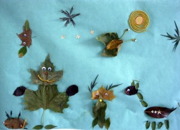

Collage de hojas
Simplemente pega las hojas que has cogido en tu paseo en una hoja de papel.
Collage of leafs
Leafs we found on walk glue on paper.
Collage aus Blättern
Die Blätter, die wir auf dem Spaziergang gefunden haben auf Papier geklebt.